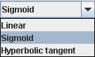
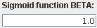
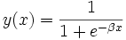
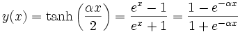
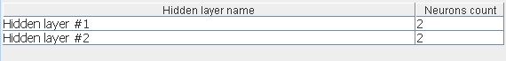
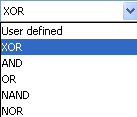
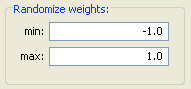
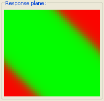
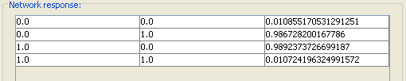
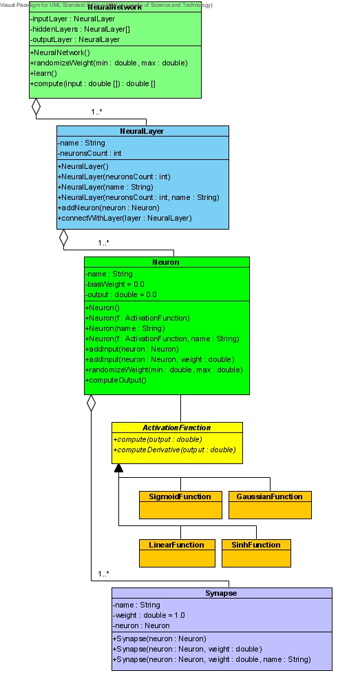

Tabs Description
1. Network Configuration Tab
1.1 Activation Function
You can choose activation function from list.

When you choose Sigmoid function you can specify Sigmoid function BETA:

When you choose Linear or Hyperbolic Tangent BETA field is disabled.
1.1.1. Sigmoid function

1.1.2. Hyperbolic tangent

1.2 Hidden Layers
When you specify number of Hidden layers, the list below is refreshed.

You can specify number of Neurons for each Hidden Layer by changing "Neurons count".
2. Learning Configuration Tab
2.1 Pattern choose - switch between implemented patterns or create your own.

2.2 Data patterns - choose number of patterns
2.3 Epochs - number of steps in learning process.
2.4 Learning Rate
2.5 Randomize Weights - range from which initial neuron weights are picked from

3. Network Response Tab
3.1 Network Response Plane - where network response is visualized in a coordinate system.

3.2 Network Response Table

Contains network response for values given in Learning Configuration.
4. UML Diagram

Tutorial
1. In "Network Configuration" tab choose Activate Function - > "Sigmoid".
2. In Sigmoid function BETA enter "1.0".
3. Choose 1 Hidden Layer with 2 Neurons.
4. Switch to "Learning Configuration" tab and choose Pattern -> "XOR" with 4 data patterns.
5. In "Learning Rate" field enter 0.7, leave rest of controls unchanged.
6. Switch to "Network Response" tab and press "Start".
7. If the network won't learn try "Start" again .
References
1. R.Tadeusiewicz - "Sieci neuronowe".
2. Wikipedia